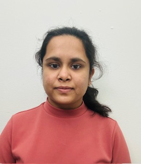

Nikhitha Yedla

Summary
Software Development Engineer with over three years of experience in a product-centric company, I have specialized in developing robust solutions for telecom operators to facilitate seamless customer transactions. My expertise lies in end-to-end transaction flow development, leveraging Java and Spring Boot frameworks, and creating both RESTful and SOAP web services. I used JUnit and Mockito to ensure thorough coverage of all scenarios, including edge cases. This meticulous attention to detail has consistently resulted in highly reliable and efficient features.
Furthermore, I have engineered Docker containers for multiple components and coordinated with the operations team during UAT to identify and rectify bugs efficiently. I have successfully led more than three project releases, coordinating effectively with five internal teams to ensure smooth delivery. This experience has developed my project management and cross-functional collaboration abilities. Additionally, I have cultivated strong client relationship management abilities, engaging directly with customers to gather business requirements and architect tailored solutions.
Education
- Master of Science in Business Analytic - W. P. Carey School of Business at Arizona State University (2022-2023)
- Bachelor of Technology (B.Tech.), Electronics and communication Engineering - CVR College Of Engineering (2015-2019)
Work Experience
-
Software Developer | Seamless Distribution Systems | India
August 2019 – June 2022
-
Led more than 3 project releases, collaborating with 5 internal teams for smooth delivery. Engaged closely with clients to gather business requirements, followed by the meticulous crafting of high and low-level design solutions.
-
Developed features to handle end-to-end transaction flow of telecom clients using JAVA, Soap APIs, and XML data. Handled
bulk transactions using parallel processing, Spring Batch, and transaction management to ensure data consistency and rollback
in case of errors.
-
Effectively Managed KYC data for telecom users stored in Elasticsearch by implementing RESTful APIs using the Spring
Boot framework, delivering robust and efficient solutions for seamless data communication.
-
Collaborated seamlessly within a cross-functional team to successfully transition the existing product from a macro
architecture to a microservices-based architecture.
-
Employed Junit, Mockito for the creation of comprehensive tests, ensuring coverage of all corner cases for the developed
features. Performed thorough manual testing and authored effective and comprehensive test scripts.
-
Coordinated with the operations team during UAT to identify and rectify bugs efficiently and actively participated in SRS
sessions to gain a comprehensive understanding of business requirements.
Skills
-
Programming Languages: Java, Python, C, HTML5, CSS, JavaScript, C++.
-
Databases: MySQL, RDBMS, SQL Server, Oracle DB, PostgreSQL, Elasticsearch, Redis.
-
Technical Skills: Web Services (Rest, Soap), ReactJS, Maven, Junit, Mockito, log4j, Apache Kafka, Kubernetes, Jenkins,
Docker, Tomcat, XML, Spring Boot, NoSQL, JSP, Angular JS, Servlets, WDSL, jQuery, SwaggerUI, Agile, Jira, Scrum,
Confluence, Git, Groovy, Gradle, IntelliJ, Eclipse IDE, VS code, Linux, Unix, Windows, Continuous Integration and
Continuous Delivery (CI/CD), HTTP, OpenAPI, web servers, proxy servers, Azure Dev Ops, Tableau.
-
Leadership And Achievements: Volunteered and served as a vice president for “STREET CAUSE” (NGO) for two years,
raised funds for homeless people during COVID-19 pandemic, worked as an ASU Student Ambassador.
Other